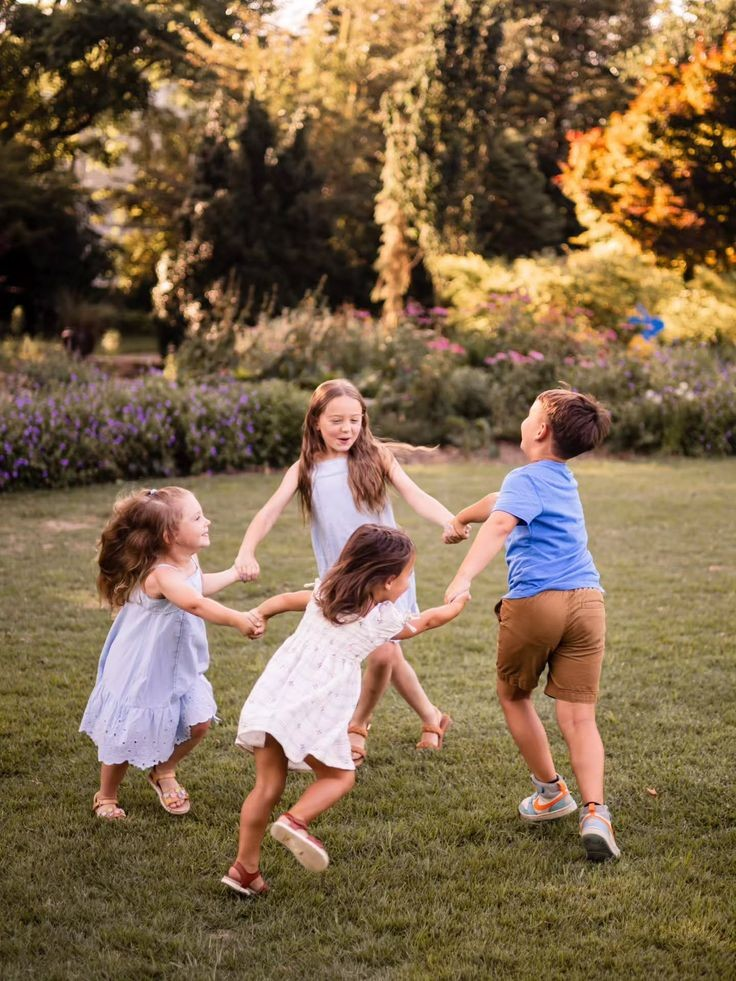

Комплексная диагностика и поддержка развития детей с особыми потребностями. Создаем инклюзивную среду, где каждый ребенок может раскрыть свой потенциал.
Комплексное обследование от 0 до 18 лет
Персональная программа развития
Помощь родителям на всех этапах
Полное обследование развития ребенка: речь, мышление, внимание, эмоциональная сфера. Выявление причин трудностей в обучении и коммуникации.
Индивидуальные занятия с дефектологом, логопедом, психологом
Консультации по выбору школы, подготовке к ПМПК, адаптации ребенка. Практические рекомендации по воспитанию и развитию детей с ОВЗ.
Семинары и курсы для педагогов
Фестивали, мастер-классы, встречи

АНО «Точка Открытий» — команда профессионалов, которые верят в уникальность каждого ребёнка и сопровождают семьи на пути к успеху их детей.
Наша миссия: создание условий для развития, поддержки и успешной интеграции в общество людей с особыми образовательными потребностями через комплексную помощь семье, повышение квалификации специалистов и организацию объединяющих мероприятий. Мы делаем мир добрее, открытее и доступнее для каждого.